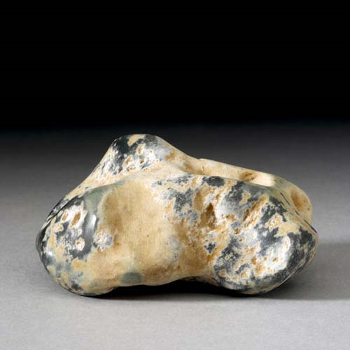

Jadeite - NaAlSi2O6
Single-Chain Inosilicates



Habit: Greenish white, apple green, blue green or purplish blue. Sometimes prismatic but commonly massive; also fibrous, granular or compact. Subvitreous but pearly on cleavages; translucent. White streak.
Environment: Occurs in high-pressure metamorphic rocks of glaucophane facies; also a component of eclogite.
Etymology: From the Spanish piedra de yjada, meaning "stone of the side," because it was believed to have a curative effect in kidney ailments.
Jadeite is only one of several varieties of jade.